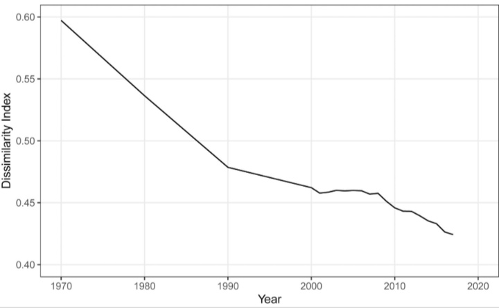
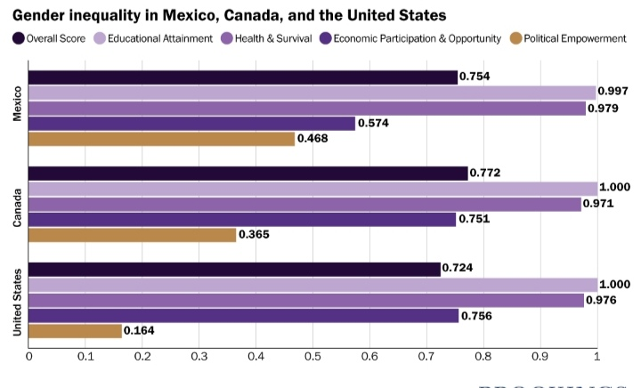
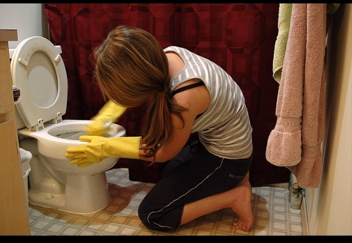
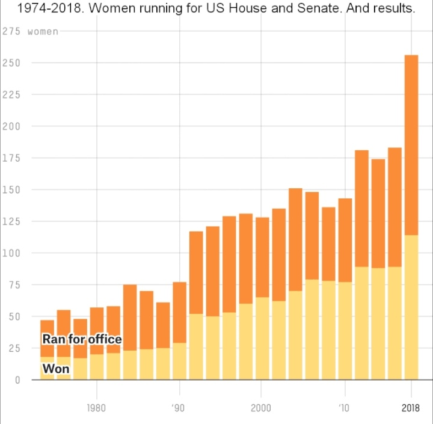

After world War 1 and 2 a lot of men who used to support their families died as soldiers so women started getting out to work to afford their needs and to raise their children.


After that the gender gap between men and women in the US started decreasing and women started having their rights.
However, despite this progress, gender inequality in the United States continues to persist in many forms, including the disparity in women's political representation and participation, occupational segregation, and the unequal distribution of household labor. The alleviation of gender inequality has been the goal of several major pieces of legislation since 1920 and continues to the present day. As of 2021, the World Economic Forum ranks the United States 30th in terms of gender equality out of 149 countries.
In addition to the inequality faced by women, inequality, prejudice, and violence against transgender men and women, as well as gender nonconforming individuals and non-binary individuals, are also prevalent in the United States. Transgender individuals suffer from prejudices in the workforce and employment, higher levels of domestic violence, higher rates of hate crimes, especially murder, and higher levels of police brutality when compared to the cisgender population.
HouseHold

Even though it decreased from couple of decades ago women are still expected to take care of the house, so she have to clean, cook and teach the children
However men are starting to help with the chores even though they take the small chores like washing the dishes and throwing the garbage, this is still a progress in the equality between men and women
And studies shows that the more educated the woman is the more the equality between the men and women in the household
Political participation

The Center for American Women and Politics reports that, as of 2013, 18.3% of congressional seats are held by women and 23% of statewide elective offices are held by women; while the percentage of Congress made up of women has steadily increased, statewide elective positions held by women have decreased from their peak of 27.6% in 2001. Women also make up, as of 2013, 24.2% of state legislators in the United States. Among the one hundred largest cities in the United States, ten had female mayors as of 2013
Work
As the civilization develops the gender pay gap is decreasing and woman and the number of household that are supported by the men income only are decreasing so women and men are approaching equality in payment. In addition to that in most high tech companies and science labs women and men are getting paid equally